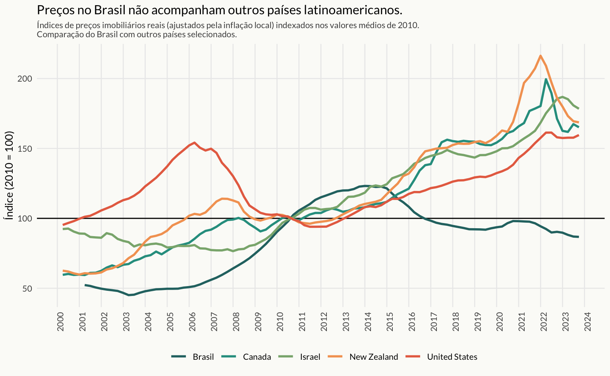
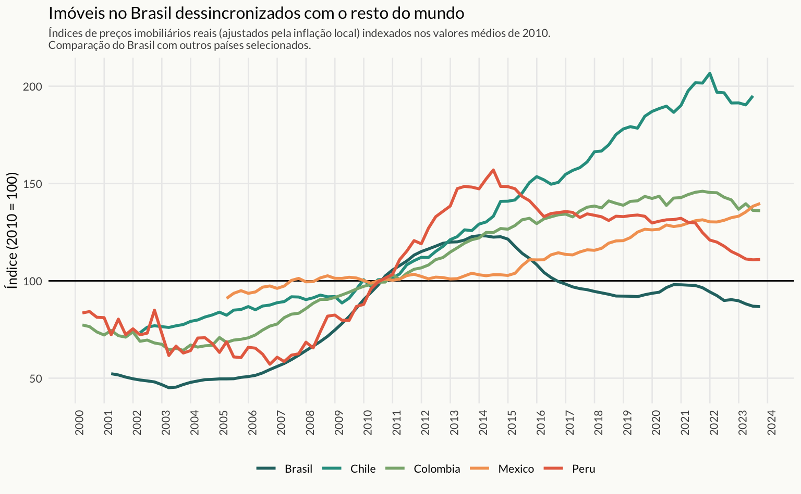

Preços de Imóveis no Brasil
Existe uma percepção generalizada na população de que os preços dos imóveis no Brasil são muito caros. Isto pode ser resultado tanto de uma ignorância sobre a dinâmica do mercado como do excesso de notícias sobre recordes de preços que se vê na imprensa. Também não faltam casos de regiões ou mesmo de ruas que, após significativo processo de revitalização, apresentaram aumentos de preços muito acima da inflação. De maneira geral, contudo, os dados apontam que os preços dos imóveis no Brasil andaram de lado: em termos reais, isto é, descontando a inflação, o nível atual do preço dos imóveis está praticamente idêntico ao que se observava em 2010.
Preços do Brasil x Mundo
Preços do Brasil x Países Desenvolvidos

Preços do Brasil x Países LATAM
